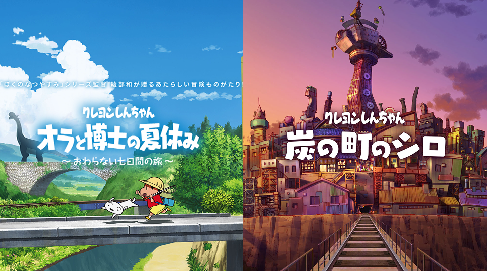
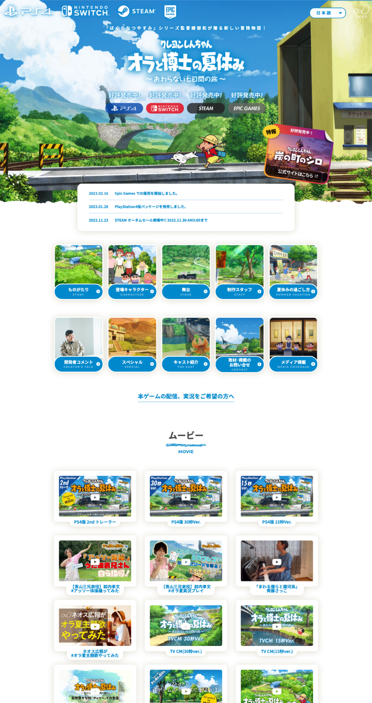
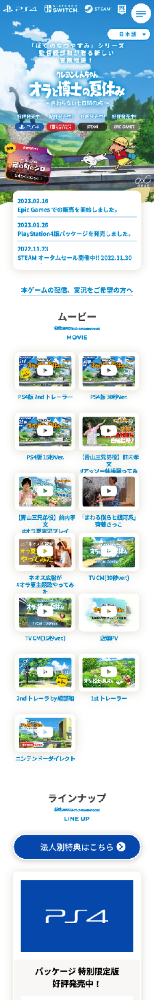
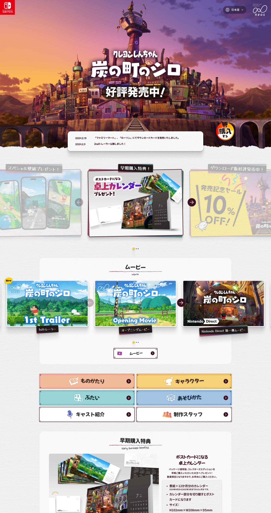
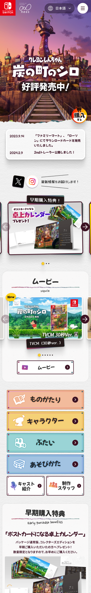

Shinchan Shiro
Promotion Site
ネオスが株式会社
クレヨンしんちゃん ゲームプロモーションサイト制作

- 担当役割
- Webデザイン・コーディング・運用デレクション・運用
- 制作年・期間
-
2021年 1月 〜 7月 6カ月
2023年 6月 〜 24年 2月 6カ月 - チーム規模
- ディレクター1名 Webデザイナー1名 コーダー1名 システムエンジニア1名 プロデューサー1名
- 使用ツール
- Figma・Illustrator・Photoshop・HTML・CSS・JavaScript
Overview
ネオス株式会社が制作・発売するキャラクターゲーム「クレヨンしんちゃん」シリーズのプロモーションサイトを2度にわたって担当。IPブランドの世界観を損なわないビジュアル設計と、ゲームの魅力を伝えるアニメーション演出・導線設計を実装しました。シリーズ全体で全世界累計出荷数100万本突破という結果に、Webの側面から貢献しました。
Shinchan Shiro
Me and the Professor on Summer Vacation
https://game.neoscorp.jp/shinchan/index.html


Shinchan Shiro and the Coal Town
https://game.neoscorp.jp/shinchan_coaltown/index.html

Strategy
- IPキャラクターのガイドラインを精査し、使用可能な表現の範囲を事前に整理
- アニメーション演出はCSS・JavaScriptで軽量実装し、表示速度とビジュアルを両立
- 第1弾の制作ノウハウを第2弾へ継承し、より短い期間で高品質な成果物を実現
- 運用継続を想定したコンポーネント設計で、更新作業の負荷を軽減
Key Contributions & Results
- IPブランドの世界観を維持しながら、プロモーション訴求力の高いUI設計を実現
- 2回の担当を通じ、制作プロセスの改善と再現性のある品質を確立
- ゲーム売上目標の達成に貢献し、全世界シリーズ累計出荷数100万本突破に寄与